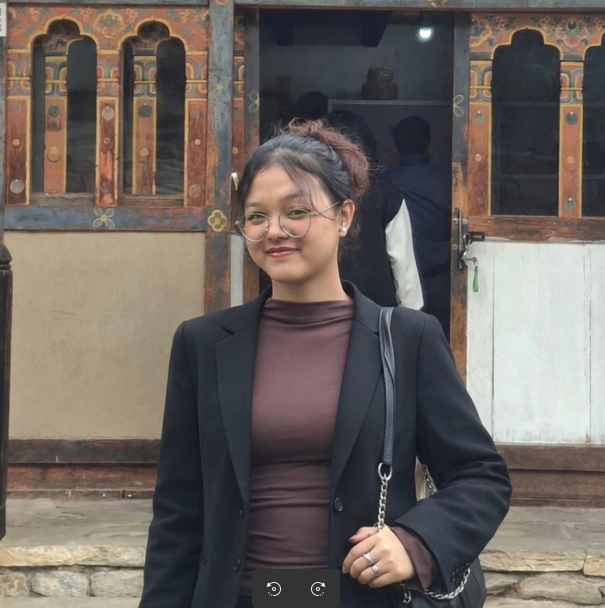

Designing spaces that breathe — through sustainable, user-centric architecture where light, material, and intention converge.

A student of space, light, and human experience — practicing architecture as both discipline and poetry.
I'm a Bachelor of Architecture student passionate about spatial planning, sustainable design, and creating environments that feel deeply intuitive and human-centered. Every project is an inquiry into how architecture shapes the way we inhabit the world.
My work integrates creative thinking with rigorous technical methodology — exploring the dialogue between form, material, and lived experience. I believe architecture should respond to its climate, its culture, and most importantly, its people.
Currently pursuing my B.Arch degree while deepening expertise in digital design tools, environmental systems, and conceptual development through studio practice and independent exploration.
"Architecture is the masterly, correct, and magnificent play of masses brought together in light."
— Le Corbusier
A suite of digital and conceptual tools built through studio practice, self-directed learning, and academic rigour — applied across drawing, modelling, and visual communication.